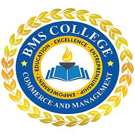

The Bachelor of Computer Application (BCA) is multidisciplinary four-year programme as per NEP-2020. The primary goal of the BCA programme is to empower students with the requisite knowledge and abilities to pursue fulfilling professions in the rapidly evolving field of Information and Technology. Students will understand the structure, function and characteristics of computer system and design of the various functional units and components of computer. The outcome of this course will enable students who are into development and testing for software industry. The study of computer concepts and programming techniques is very essential part of a student or a programmer in the field of Information Technology and Computer Science.
The B.C.A program offered at BMSCCM follows the CBCS syllabus designed by the Bengaluru City University. The College provides students best of opportunities for professional careers as well as higher studies in the area of Computer application. The college aims at holistic development of the students, so that they make effective contribution to society. The excellent academic environment along with co-curricular and sports activities empowers the students to thrive in a fast-paced and exciting learning environment. Classroom lectures, projects, presentation and case studies form the components of teaching methodology. In addition to this the students pursue Career enhancement courses/Add on courses like Executive Communication, Data Science, Artificial Intelligence and Machine Learning etc.